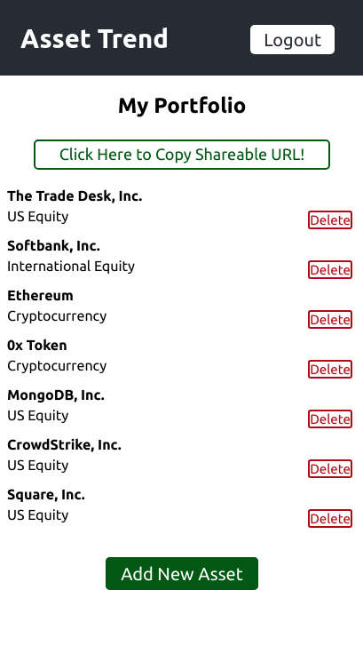

Connor McCormack
I am a full-stack web developer and Thinkful Engineering Immersion graduate who loves creating clean designs and valuable user experiences. Working on a dedicated, driven team of software developers is my dream. Outside of coding, I love to travel (25+ countries and counting!), write novels, and enjoy extreme sports like rock climbing and mountain biking. My other interests include cryptocurrency, economics, markets, SaaS companies, start-ups, digital nomading, and gaming (I'm a top 25 Risk player globally).
My Skills
JavaScript
Node.JS
React
HTML5
CSS3
SQL
Git
GitHub
Contact Me :)
Projects
Omni QA - Knowledgebase Software
A SaaS product that allows teams to post questions and answer them from anywhere. Users can register, login, post questions, post answers and like questions. Filters enable users to see questions by department, or just questions that they have liked.
Technology Stack: React, NodeJS, PostgreSQL
Asset Trend - Portfolio Tracking

A mobile-optimized, full stack app that tracks your assets. Add new stocks, crypto, and other investments to your portfolio, and share the link with your friends!
Technology Stack: React, NodeJS, PostgreSQL
Famous Investors Quiz

A brief assessment that tests the user’s knowledge of famous investors. The app’s responsive, mobile-first design features relevant images and challenging questions that offer four answer choices. Quiz takers can see their score as they move from question to question, see the correct answer if they get a question wrong, and restart the quiz from the results page.
Technology Stack: HTML, CSS, JavaScript, jQuery